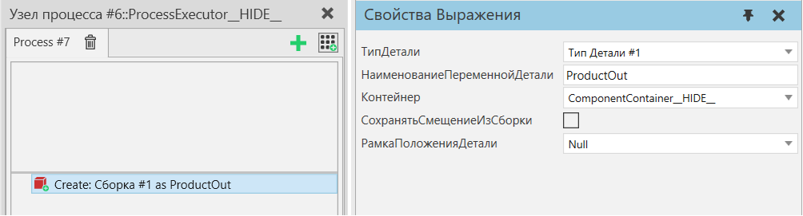
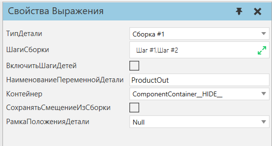

Создать |
|
Оператор Создать используется для создания нового экземпляра продукта выбранного типа продукта.  Также см. поведение Генератор Деталей и оператор ТранспортВ, которые представляют собой альтернативные способы создания или передачи продуктов в процесс.
СохранятьСмещениеИзСборки используется для управления положением продуктов, когда оператор Создать используется для создания пакетов продуктов. По умолчанию оно равно false, и все продукты создаются с нулевыми смещениями. Если задать для него значение true, созданные слоты продуктов будут размещены по смещению их слотов сборки, как определено в AssemblyProductType. Создание сборок  Если выбранный тип продукта является сборочным типом продукта, создается экземпляр сборки. Как правило, сборки создаются в полностью собранном состоянии, а это означает, что каждый слот сборки, которому назначен DefaultProductType, будет заполнен новым экземпляром продукта этого типа. Обратите внимание, что DefaultProductType слота может также ссылаться на тип продукта Assembly, и в этом случае новый экземпляр Assembly для слота будет создан в полностью собранном состоянии. Для сборок также можно выбрать, какие шаги сборки будут заполнены новыми экземплярами продукта, см. свойства ШагиСборки и ВключитьШагиДетей. Обратите внимание, что для создания экземпляров сборки необходимо выбрать первый шаг сборки. Если первый шаг сборки не выбран, этот оператор последовательно создаст один или несколько наборов продуктов. Чтобы объяснить это, учтите, что обычно сборка состоит из базового продукта с иерархиями дочерних продуктов. Предположим, что первый шаг не выбран и экземпляр сборки с базовым продуктом не создан. В этом случае все оставшиеся отдельные иерархии продуктов, содержащиеся в выбранных шагах, создаются как наборы продуктов. Обратите внимание, что в сборках первый слот в шаге сборки обычно считается родительским для всех слотов в дочерних шагах сборки. Эта информация используется для разделения выбранных шагов сборки и слотов в них на пакеты продуктов. Также обратите внимание, что пакеты продуктов не содержат дополнительных данных об иерархии слотов, которые несет экземпляр сборки, поэтому нельзя использовать, например оператор Получить сборку для проверки содержания наборов продуктов. Свойства
|